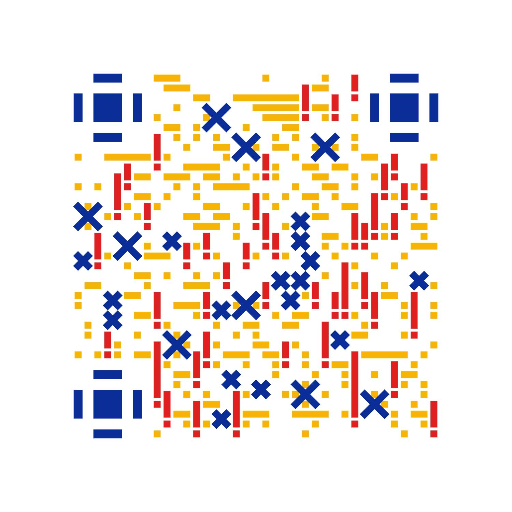
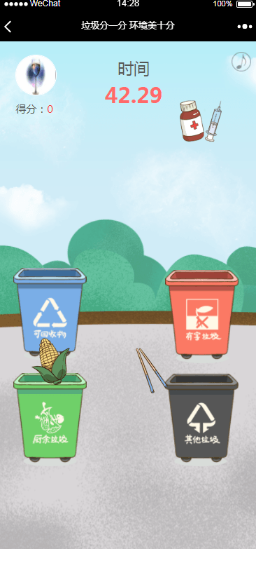
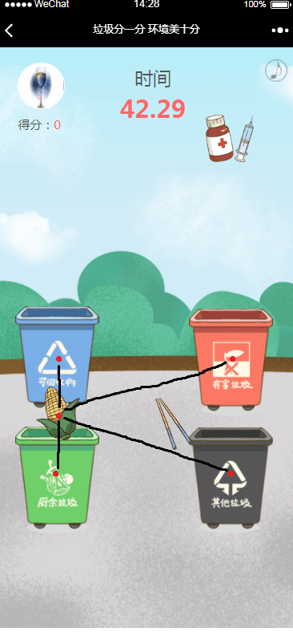
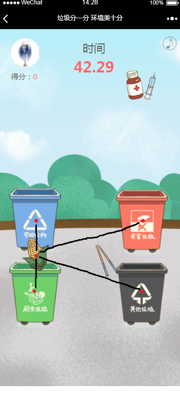
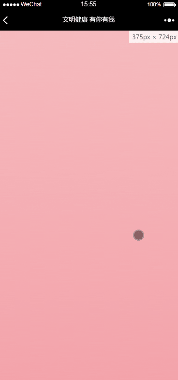
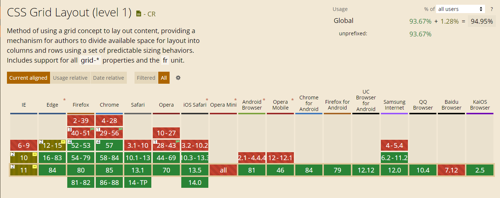
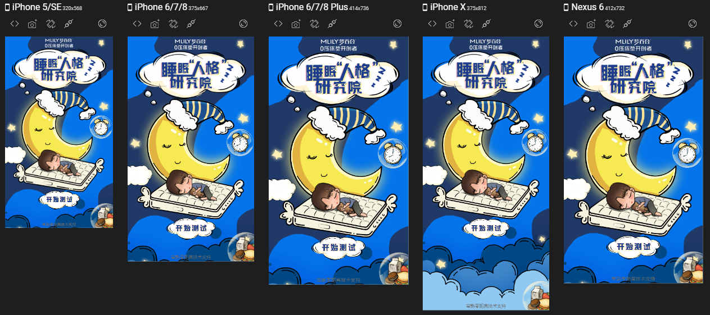

个人述职报告
——王浩彬目录
- 自我介绍
- 工作成果
- 心得体会
- 未来规划
- 我的博客
自我介绍
import Vue from "vue";
const me = new Vue({
data() {
return {
name: '王浩彬'
}
}
})
自我介绍
import Vue from "vue";
const me = new Vue({
data() {
return {
name: '王浩彬',
dept: '技术部'
}
}
})
自我介绍
import Vue from "vue";
const me = new Vue({
data() {
return {
name: '王浩彬',
dept: '技术部',
post: 'web前端(实习)'
}
}
})
自我介绍
import Vue from "vue";
const me = new Vue({
data() {
return {
name: '王浩彬',
dept: '技术部',
post: 'web前端(实习)',
since: '2020年5月18日'
}
}
})
自我介绍
import Vue from "vue";
const me = new Vue({
data() {
return {
name: '王浩彬',
dept: '技术部',
post: 'web前端(实习)',
since: '2020年5月18日',
hobby: ['动漫', '日语', '前端']
}
}
})
工作成果
项目示例
| 种类 | 例子 |
|---|---|
| 展示 | 大墅尚品、夏日饮品节 |
| 问答 | 高新区答题、梦百合性格测试 |
| 滑屏 | 常熟七五普法、文明健康广告 |
| 游戏 | 垃圾分一分 |
| 点亮 | 禧徕乐、卡滋贝诺 |
| 投票 | 十佳污防案例、最美城市管家 |
| 小程序 | 家装监理 |
问答类：高新区答题
活动流程

- 主人公在画面左上方出现，开始行走
- 行走至第一个点时停下脚步，划入问题弹窗
- 回答正确与错误则弹出相应的弹窗
- 之后主人公继续行走，画面也会随之移动
- 如此往复答完5题，跳转到海报页面
- 结果会提交到后台，5题全对则增加抽奖机会
活动要点
- 如何准确地控制行走动画与画面滚动
- 如何切换主人公的行走状态
- 如何切换问题
如何准确地控制行走动画与画面滚动
moveToQuestion1() {
let that = this
this.t1.to(hero, {
className: heroMoveClass
}).to(hero, { // 人物行走帧
duration: 3,
x: "115vw",
ease: "none"
}).to(window, { // 画面移动帧
duration: 3,
scrollTo: { x: vw2px(97) },
onComplete() {
that.startQuestion()
}
}, "-=2").to(hero, {
className: heroStandClass
}, "-=1")
}
- 用到的主要框架是GSAP
- 每一个to都是一个动画帧
- 一个动画帧包含了持续时间、变化属性、缓动函数、钩子等要素
- 本活动主要有3类动画帧：人物行走帧、画面移动帧、属性类切换帧
如何切换主人公的行走状态
moveToQuestion1() {
let that = this
this.t1.to(hero, { // 属性类切换帧
className: heroMoveClass
}).to(hero, {
duration: 3,
x: "115vw",
ease: "none"
}).to(window, {
duration: 3,
scrollTo: { x: vw2px(97) },
onComplete() {
that.startQuestion()
}
}, "-=2").to(hero, {
className: heroStandClass
}, "-=1")
}
.hero {
position: absolute;
z-index: 2;
top: 98vw;
&:not(.stand) {
.hero-image {
display: block;
}
.hero-stand-image {
display: none;
}
}
&.stand {
.hero-image {
display: none;
}
.hero-stand-image {
display: block;
}
}
&.flipped {
img {
transform: scaleX(-1);
}
}
}
heroMoveClass
heroStandClass
heroFlippedMoveClass
heroFlippedStandClass
- 主人公由2张图片组成：一静一动
- 切换行走状态本质上是图片显示的切换
- 左右翻转状态是CSS transform的作用
如何切换问题
第{{currentQuestionId+1}}题/共5题
{{currentQuestion.question}}
-
A. {{currentQuestion.answer.A}}
-
B. {{currentQuestion.answer.B}}
-
C. {{currentQuestion.answer.C}}
-
D. {{currentQuestion.answer.D}}
startQuestion() {
this.t1.pause()
this.currentQuestion = this.questions[this.currentQuestionId]
},
onChoose(e) {
const target = e.target
target.classList.add('active')
const yourAnswerValue = target.dataset.choice
this.myAnswers = [...this.myAnswers, yourAnswerValue]
const rightAnswerValue = this.currentQuestion.correct
this.correctAnswer = rightAnswerValue
if (yourAnswerValue === rightAnswerValue) {
this.score++
this.showDialogRight = true
} else {
this.showDialogWrong = true
}
},
onContinue() {
this.t1.resume()
this.currentQuestion = null
this.currentQuestionId += 1
this.showDialogRight = false
this.showDialogWrong = false
if (this.currentQuestionId === 5) {
this.submit()
}
},
var questions = [{
question: "bilibili名字的来源是哪部番剧？( )",
answer: {
A: "魔法禁书目录",
B: "某科学的超电磁炮",
C: "jojo的奇妙冒险",
D: "鬼灭之刃"
},
correct: "B"
}, {
question: "明日方舟是哪个公司制作的？( )",
answer: {
A: "米哈游",
B: "腾讯天美工作室",
C: "鹰角网络",
D: "网易游戏"
},
correct: "C"
}, {
question: "以下哪一项是正确的？( )",
answer: {
A: "我是正确的",
B: "A在撒谎",
C: "反正B不是正确的",
D: "有一个选项在说谎"
},
correct: "A"
}];
- 问题由模板渲染而成
- 何为模板渲染？你给我原始数据，我给你处理结果
- 开始答题时暂停动画，根据序号找到问题数据并将其渲染
- 点击提交按钮时判断对错
- 继续答题时将问题的序号+1即可
游戏类：垃圾分一分
活动流程

- 倒计时开始，游戏开始
- 各种垃圾会不断地从屏幕上方的随机位置落下来
- 垃圾落到地面上会消失
- 尽可能多地将垃圾拖放到正确的垃圾桶内
- 分类正确则加分，错误则减分
- 1分钟内达到100分以上即可获得抽奖机会
活动要点
- 如何控制垃圾的动画（下落，拖拽等）
- 如何让垃圾下落是随机的
- 如何判断垃圾是否被正确地归类了
如何控制垃圾的动画（下落，拖拽等）
dropGarbage(slave) {
slave.fromTo(target, {
y: "-28vw"
}, {
y: "158vw",
duration: 6
}).to(target, {
duration: 0.6,
opacity: 0,
className: "garbage gone"
});
}
dragGarbages() {
Draggable.create(garbageId, {
onPress: function () {
// 拖拽垃圾时
const target = this.target;
if (target.classList.contains('gone')) {
// 垃圾已经消失则无法继续拖拽
this.kill();
} else {
// 拖拽垃圾时停止下落动画
slave.pause();
}
},
onRelease: function () {
// 松开时回收垃圾并判断正误
vm.recycleGarbage(target)
vm.judge(target, trashBin)
}
});
}
- 本项目主要有3个动画帧：下落动画帧、拖放帧、回收动画帧
- 垃圾默认是下落状态，当用户开始拖拽垃圾时要暂停下落帧
- 松开垃圾时播放回收动画帧，并判断正误
如何让垃圾下落是随机的
@function random_range($min, $max) {
$rand: random();
$random_range: $min + floor($rand * (($max - $min) + 1));
@return $random_range;
}
.garbage {
$garbage-count: 40;
position: absolute;
top: -28vw;
left: var(--left-offset);
transform: scale(0.75);
@for $i from 1 through $garbage-count {
&:nth-child(#{$i}) {
--left-offset: #{random_range(12, 67) * 1vw};
}
}
}
const shuffle = ([...arr]) => {
let m = arr.length;
while (m) {
const i = Math.floor(Math.random() * m--);
[arr[m], arr[i]] = [arr[i], arr[m]];
}
return arr;
};
getRubbish() {
// 获取垃圾信息并打乱顺序
this.rubbish.list = shuffle(this.rubbish.list);
}
- 首先在样式里生成随机的垃圾位置
- 然后在逻辑里将垃圾数组打乱顺序
- 这样不仅位置是随机的，而且每玩一次垃圾本身也是随机的
如何判断垃圾是否被正确地归类了
// 判断最近的垃圾桶
const target = this.target;
const distances = [];
for (let trashBin of Array.from(trashBins)) {
const targetCP = getCenterPoint(target);
const trashBinCP = getCenterPoint(trashBin);
const distance = calcDistance(targetCP.x, trashBinCP.x, targetCP.y, trashBinCP.y);
distances.push(distance);
}
const minDistance = Math.min(...distances);
for (let [idStr, trashBin] of Object.entries(Array.from(trashBins))) {
const id = Number(idStr);
if (this.hitTest(trashBin) && distances[id] === minDistance) {
vm.recycleGarbage(target);
vm.judge(target, trashBin);
}
}
// 判断对错
if (targetCategory === trashBinCategory) {
this.score += this.scorePoint;
} else {
if (this.score > 0) {
this.score -= this.scorePoint / 3;
}
}

 

- 首先要判断垃圾和哪个垃圾桶接触了
- 计算出四个垃圾桶的中心与垃圾中心之间的距离
- 找出最近距离
- 选取最近距离的垃圾桶再判断对错
滑屏类：常熟七五普法
活动流程

- 进入页面后开始下滑
- 下滑的过程中会不断地出现元素
- 元素出现的动画种类很多
- 当上滑时元素会消失，再次下滑时出现
活动要点
- 如何实现滚动时的“倒带”动画效果
- 如何实现动态渐变文字
如何实现滚动时的“倒带”动画效果

if (i === 1) {
this.animateTrigger({
el: imgs[0],
scale: 0.4,
start: "top bottom-=100px"
});
} else if (i === 2) {
this.animateTrigger({
el: imgs[0],
x: "30vw",
delay: 1,
start: "top bottom-=100px"
});
this.animateTrigger({
el: imgs[1],
x: "-30vw",
delay: 1.2,
start: "top bottom-=100px"
});
this.animateTrigger({
el: imgs[2],
x: "30vw",
delay: 1.4,
start: "top bottom-=100px"
});
} else if (i === 3) {
imgs.forEach((img, j) => {
this.animateTrigger({
el: img,
x: "30vw",
rotateZ: "-15deg",
start: "top bottom-=100px"
});
});
}
- GSAP于2020年5月底新出的插件——ScrollTrigger
- 当用户滚动到一定距离时才触发动画，并且能够倒放
- 主要还是动画的实现方式
如何实现动态渐变文字
.title-grad {
&::before,
&::after {
content: attr(data-text);
}
&::before {
position: absolute;
min-width: 84vw; // 防止文字被裁
background: var(--title-grad-bg) 0 / 500% no-repeat;
color: transparent;
background-clip: text;
animation: flow 1s linear infinite;
}
&::after {
position: relative;
bottom: -0.8vw;
color: transparent;
background: linear-gradient();
}
}
@keyframes flow {
from {
background-position: 0;
}
to {
background-position: 100%;
}
}
- 首先将文字背景设置成渐变背景
- 将文字颜色设置为透明，背景裁剪方式设置为按文本裁剪
- 这样渐变背景就会被裁剪为文字的形状，再加上动画就完成了
心得体会
- 动画很重要
- 适配很重要
- 总结很重要
动画很重要



- 在现实生活中，人们的大脑习惯了被动态的东西所吸引
- 适当的动画效果可以为网页添加有价值的交互和反馈，提升用户的情感体验
- 前端开发中实现动画有以下方式：CSS、SVG、Canvas、JS动画引擎
适配很重要


- 在使用一个样式属性或JS语法之前，先要确保大多数系统都支持它
- 页面在每个手机中显示各不相同，要确保页面显示都是正常的
- 每个系统都有各自的特征，要根据这些特征进行适配
一些我遇到的坑
- ios弹出键盘会使元素错位，解决方法是失去焦点时偏移一点距离
- ios用vue的历史路由模式会导致分享失败，原因是ios的浏览历史机制
- 安卓无限加载无法触发，是因为手机大多有虚拟键导致滑不到底
- 有部分手机缓存不易清除，这时考虑给文件加上版本号强制清楚缓存
总结很重要
- 做完一个活动时，要将遇到的问题统统地总结归纳出来
- 这样下次遇到同样的问题时就能立马解决，保证项目的进度了
未来规划
目前的不足之处
- 和团队的沟通不足
- 业务广度不足
- 技术深度不足
改进计划
- 加强和团队的沟通
- 业务方面涉猎更广
- 技术方面钻得更深
我的博客
博客文章列表

点赞最多的文章